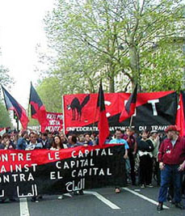

Submitted on Thu, 04/13/2006 - 6:03pm
Disclaimer - The following article is reposted here because it is an issue with some relevance to the IWW. The views of the author do not necessarily agree with those of the IWW and vice versa.
 TAKE ACTION!
TAKE ACTION!
On April 10, 2006, a Detroit meatpacking plant said Monday that 15 immigrant women were fired last month after attending a protest for immigrant rights.
Details of this event are described in this news article from the Detroit Free Press.
We are calling everyone to write, call and Fax your voice of protest to the company and the manager to demand:
Submitted on Thu, 04/13/2006 - 7:08am
Fellow Workers,
Kindly find below a urgent announcement of the IWA secretariat in Oslo regarding the strugle beetween CNT workers and Mercadona company in Spain.
They need our solidarity - An Injury to one is an insury to all!!!
Argyris Argyriadis
IWW GREECE
iwwgreece@yahoo.gr
From the IWA-Secretariat, Oslo
Dear Sections and Friends!
The CNTE has conflicts in various places in Spain against the firm Mercadona, and now in Barcelona the CNT-AIT has a strike at the "el Centro Logistico de Mercadona en Sant Sadorni d`Anoia". Measures of security, three union delegates’ readmission, and the ceasing of labor pursuit are the reasons of the strike!
Submitted on Wed, 04/12/2006 - 12:52am
 On Monday morning, the government decided to "replace" the CPE [Contract of First Employment]. It has been defeated, we must continue the mobilization, above all in order to achieve the repeal of the so-called "law of equal opportunities" and of the CNE [Contract of New Employment]. The government can talk about "replacing" if it so chooses, what matters is that the CPE has been withdrawn.
On Monday morning, the government decided to "replace" the CPE [Contract of First Employment]. It has been defeated, we must continue the mobilization, above all in order to achieve the repeal of the so-called "law of equal opportunities" and of the CNE [Contract of New Employment]. The government can talk about "replacing" if it so chooses, what matters is that the CPE has been withdrawn.
The "measures to help young people gain access to jobs" that will replace the CPE are nothing more than a compilation of already-existing measures, which give tax breaks to employers but which do not directly deal with the question of workers' rights. This is a historic victory. It is a long time since a government has had to bow to a social movement and proves that even the most seemingly inflexible governments can give in under the threat of largescale social conflict. This victory certainly belongs to the university and high-school students, who had to fight practically alone for around 9 weeks.
Submitted on Mon, 04/10/2006 - 1:07pm
http://www.cnt.es/noticia.php?id=2325
 La CNT celebró hoy sábado, 1 de abril, la manifestación que había convocado contra la Reforma Laboral en Madrid, con salida en la Avenida de la Albufera y llegada a Jardín Campo de Toro. Alrededor de 5.000 personas se han reunido en esta jornada de protesta, a la que se han desplazado autobuses desde distintos puntos del país.
La CNT celebró hoy sábado, 1 de abril, la manifestación que había convocado contra la Reforma Laboral en Madrid, con salida en la Avenida de la Albufera y llegada a Jardín Campo de Toro. Alrededor de 5.000 personas se han reunido en esta jornada de protesta, a la que se han desplazado autobuses desde distintos puntos del país.
Los manifestantes han dejado clara su oposición a una nueva regulación que signifique el abaratamiento de los despidos, la facilitación de los despidos colectivos, la potenciación de las Empresas de Trabajo Temporal -cuya pretensión más inmediata es entrar en sectores como la Administración pública y la construcción-, la oposición, en definitiva, a que cada nueva reforma signifique más prebendas a los empresarios en detrimento de los derechos de los trabajadores.
Al finalizar la manifestación, diversos oradores del sindicato hicieron hincapié en las proclamas de la manifestación.
Submitted on Mon, 04/10/2006 - 1:00pm
Originally posted to infoshop.org by "Worker Freedom".
As millions fight new employment laws in France, last week 5,000 people marched in Madrid against new proposed Labour Reforms in Spain. On Saturday 1st April the Spanish anarcho-syndicalist trade union, the CNT, held a demonstration and workers arrived in buses from all over the country to attend.
Like the demonstrators in France (see www.libcom.org/blog for coverage) the participants were opposing a new proposed employment law. It allows for the reduction in redundancy payments, makes mass sackings easier and increases the power of temp agencies - who are currently trying to enter sectors such as public administration and construction. They were opposed most of all to the fact that every new reform means more advantages to employers to the detriment of workers' rights.